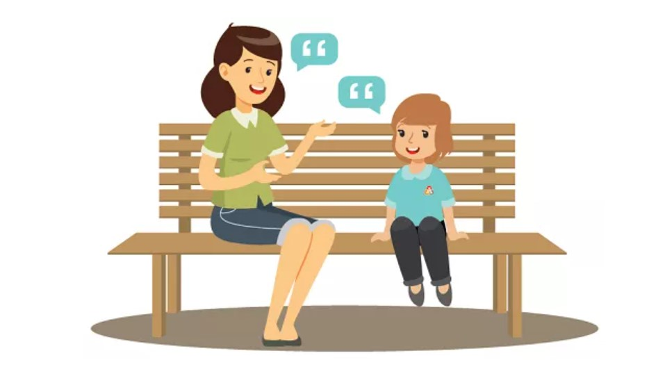

The first step of bullying solution is to know about your kid being bullied. Only when you know that your kid is getting bullied or bullying others, you can take steps to educate them about bullying and anti-bullying tactics.
Similarly, you can intervene and ask the parents of bullies to get involved. Here is the plan of action to follow to protect your kid.
You should make your kid understand everything about bullying so that he/she can identify when he/she is bullied and share the incident with you on the same day. The act of making them understand different forms of bullying makes you an open option for your kid to share the story without any hesitation.
Besides, let your kid know that you are always there to solve any bullying issue that he/she may face in the online as well as the physical world.
Teach your kid not to let the situation get out of the hands so that the bullying act escalates. Tell them that if he/she is bullied in front of others for the first time, he/she should laugh at it with everyone else and not react badly so that the situation escalates.
It is generally found that bullies prey on those who keep quiet when they are being bullied. Therefore, ask your kid to be cheerful all the time rather than being shy and introverted.
Besides, make your kid understand about staying with a group of friends all the time because bullies prey on isolated kids. They should ask the bullies to stop politely by making eye contact.
Humor is a great tool to ask bullies to stop rather than being aggressive and picking up a fight. Moreover, make sure that your kid involves the teacher when the bullies persist with their act of bullying.
The possible solution of bullying in most cases is to get the authorities involved. Let the teachers know about the bullying situation and get the parents of the victims involved so that they can take steps on their sides.
You can also face the bullies and bullies are always afraid of the parents of their victims. You can ask the teacher to keep an eye on the victims and bullies and change seats and sections if required. You can also get the official local authorities such as Civil Rights Division if required.
It could be quite possible that your kid is not a victim but a bully instead. Rather than getting humiliated by teachers and parents of those victims whom your kid is bullying, you should educate your kid and take strict actions to change his/her behavior and mental thoughts. Tell your kid why bullying is wrong and that he/she should apologize to all those whom he/she has bullied and make them friends.
Teach your kid how to treat and behave with others with politeness and compassion. Ask your kid to stop himself from any aggressive and offensive act. Your kid should choose the words properly. Ask your kids how they will feel if others bully them, and if the problem persists, you can rebuke them in front of others to give them the taste of their own medicine to restore the sense in them.